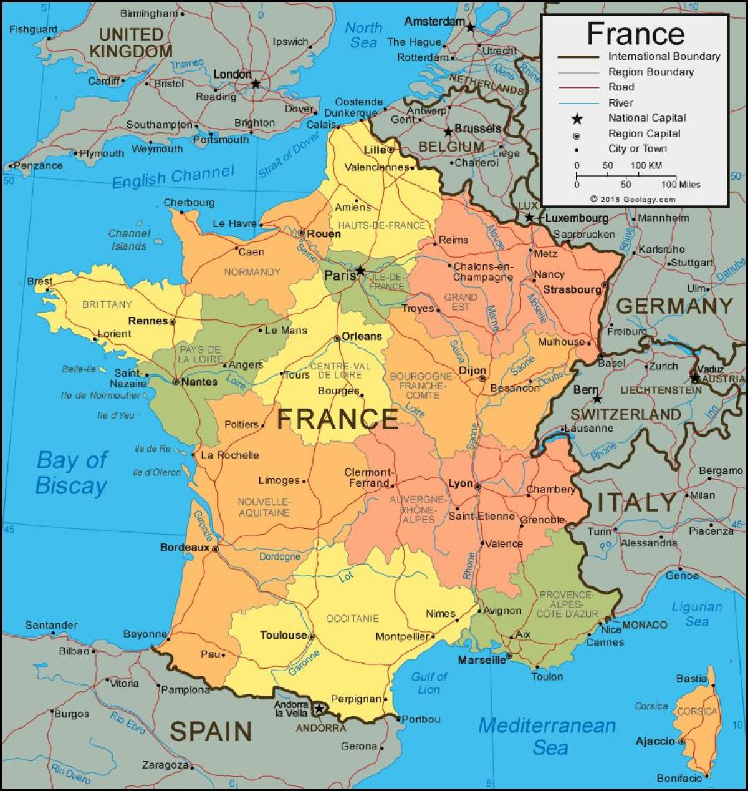

.png)
França- Informações Gerais |
|---|
A França, oficialmente conhecida como República Francesa, é um país localizado na Europa Ocidental. É famosa por sua rica história, cultura vibrante, e importância econômica. |
Localização e Geografia |
|
A França está situada no oeste da Europa e faz fronteira com países como Bélgica, Luxemburgo, Alemanha, Suíça, Itália, Mônaco, Espanha e Andorra. É o terceiro maior país da Europa, com uma área de aproximadamente 551.695 km². O país também possui uma extensa costa ao longo do Oceano Atlântico e do Mar Mediterrâneo. A geografia francesa é diversa, com montanhas como os Alpes e os Pirineus, além de planícies e rios importantes como o Sena e o Ródano. |
 |
População e Idioma |
A população da França é de aproximadamente 67 milhões de pessoas. O idioma oficial é o francês, que é amplamente falado em muitas partes do mundo. A França é conhecida por sua diversidade cultural, abrigando pessoas de várias origens étnicas e culturais. |
Economia |
A França possui a sexta maior economia do mundo. É um centro global de negócios, moda, tecnologia e turismo. Paris, a capital, é uma das cidades mais visitadas do mundo e um importante centro financeiro. |
Politica e Governo |
A França é uma república semi-presidencialista com um presidente e um primeiro-ministro. O país é conhecido por seu sistema de bem-estar social robusto e pela sua influência política na União Europeia e no mundo. A França também desempenhou um papel importante nas duas Guerras Mundiais e foi um dos membros fundadores da União Europeia. |